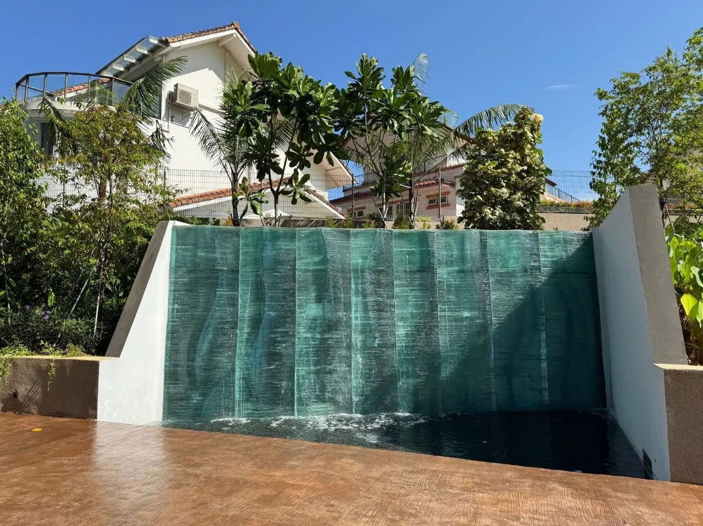
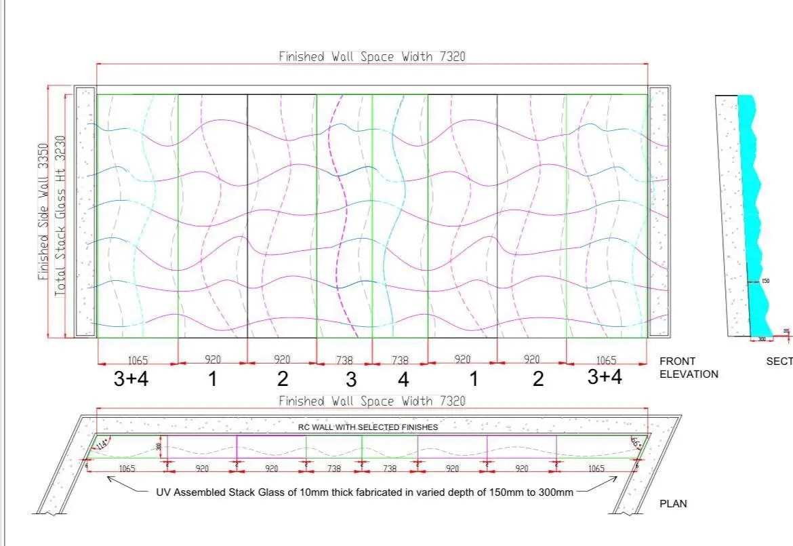
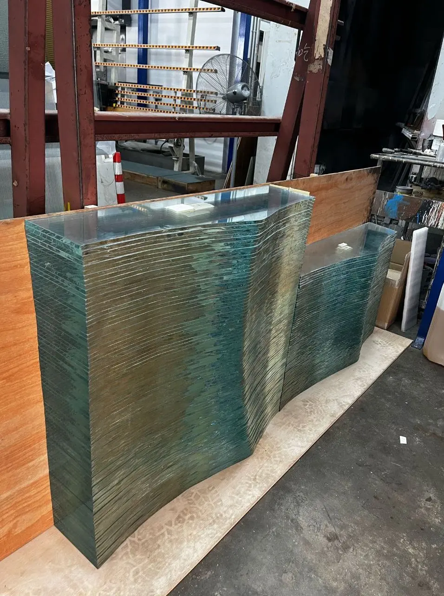
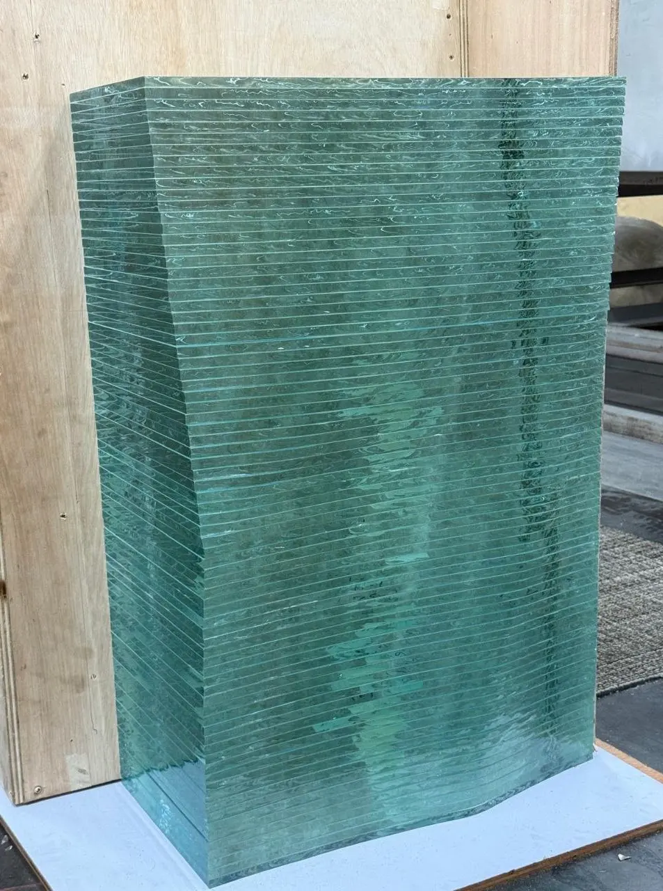

← all workarchitecture
AMO Waterwall

- context
- Freelance
- year
- 2025
- type
- architecture
AMO Waterwall is a water feature located in a condominium lobby in Singapore. The wall is split into 8 sections with creases and valleys, and each slice of glass was specifically hand cut and assembled to form the wall. The cut files were computationally prepared in Grasshopper and sent to the glass manufacturer.




